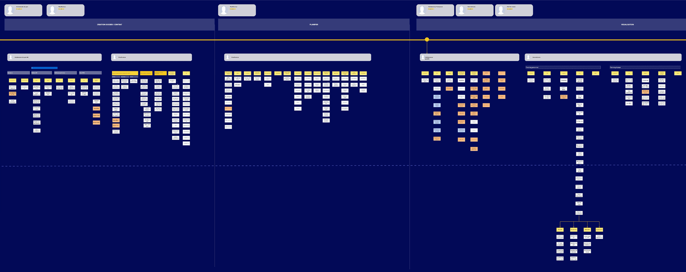
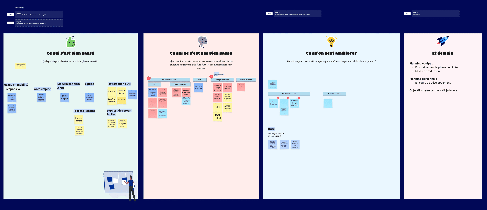
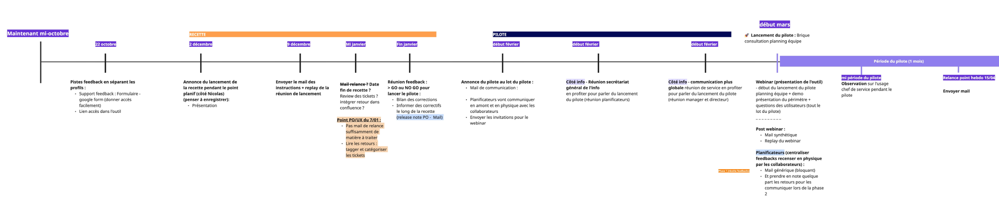
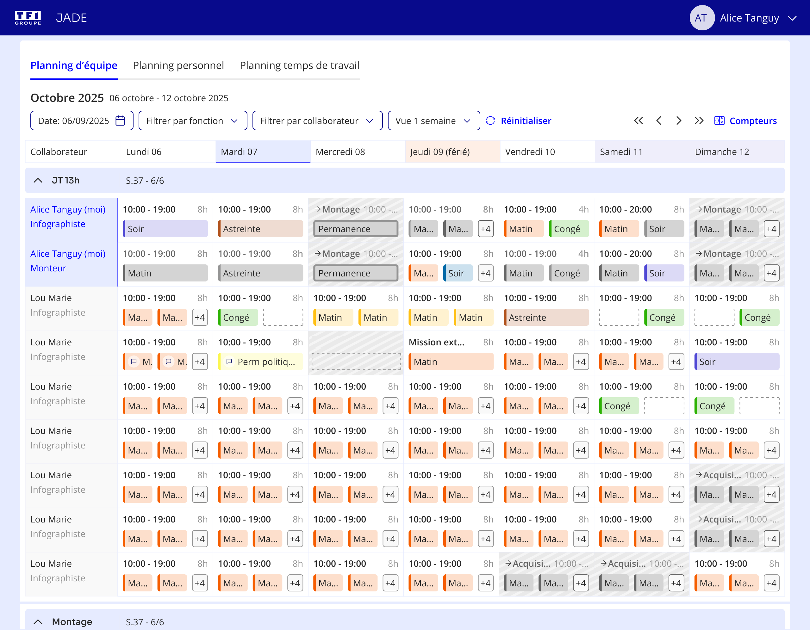
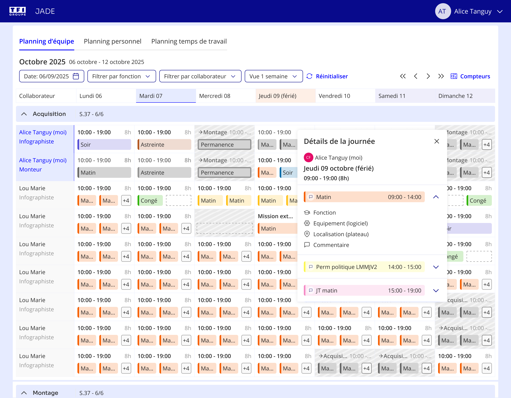
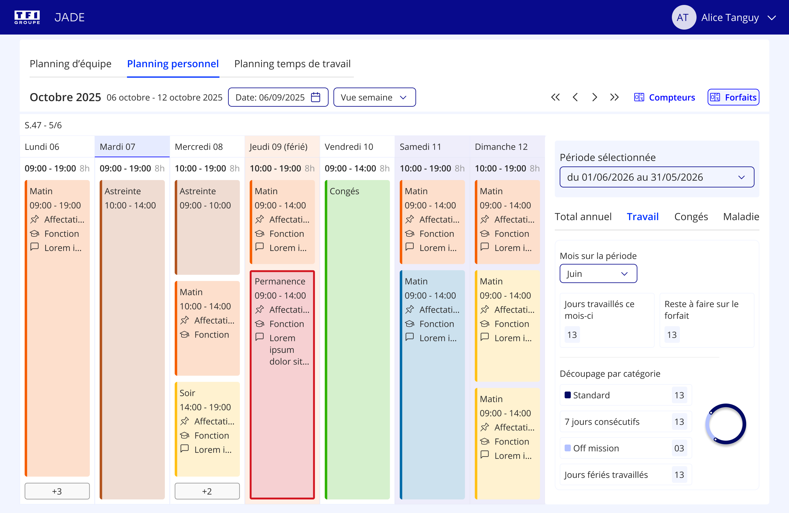
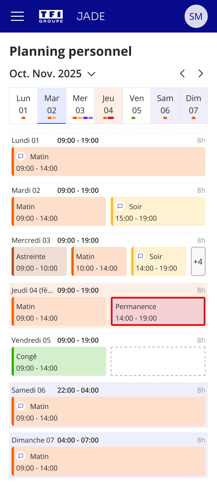
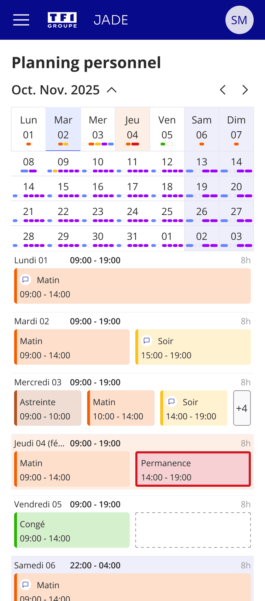

JADE +
Outil de consultation et de planification auprès des planificateurs et collaborateurs. Les équipes de TF1 (JRI, DT et production) sont planifiées via l'outil Jade en coordination avec les journaux télévisés et les enregistrements d'émissions.

Planifier 500 collaborateurs sur un client web moderne
Refonte d'un client lourd obsolète en outil web — pour les planificateurs (organisation des équipes) et pour les collaborateurs (consultation du planning et du décompte de temps) sur desktop et mobile.
Lire l'étude de casContexte Business et produit
Le groupe TF1 produit et diffuse des programmes d'information et de divertissement. Au quotidien, les équipes de planification organisent les ressources humaines (permanents et intermittents) pour assurer la continuité des antennes.
Au sein du Pôle Produit Corporate, j'ai travaillé sur Jade + — un projet de refonte qui permet aux planificateurs d'organiser les équipes et aux collaborateurs de consulter leurs plannings et leur décompte de temps.
Ajout de complexité : bascule vers la méthode Agile sans formation ni accompagnement pour s'y préparer.
Les défis qui ont structuré la démarche
Cette phase a révélé trois défis structurels qui ont influencé la démarche :
4 enjeux qui ont guidé la démarche
Accompagnement de l'équipe à la démarche Agile
Opportunité : équipe technique favorable à l'Agile, PM plus réfractaire — ancré dans une autre méthodologie depuis des années. Ateliers mis en place pour acculturer et fédérer autour d'une vision commune.



Phase de conception et de déploiement
Objectif : guider des stakeholders non-utilisateurs vers des décisions éclairées et sans biais, tout en validant nos hypothèses de conception.





Desktop & mobile
Retours des utilisateurs positifs
Résultats issus du questionnaire de satisfaction diffusé auprès de la même population qu'en phase de recette :
Les retours de la phase pilote et questionnaire de satisfaction confirment une bonne réception de l'outil. Les indicateurs Datadog permettront de suivre l'adoption en continu après déploiement complet.